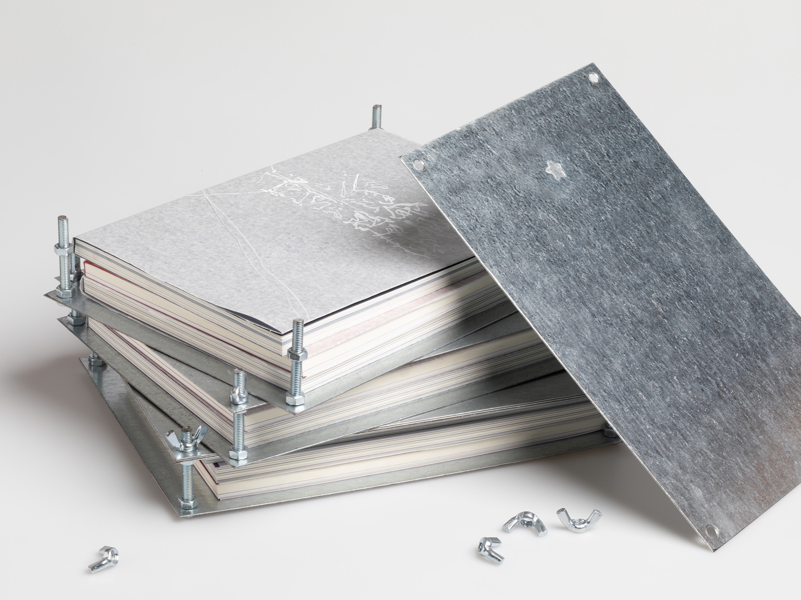
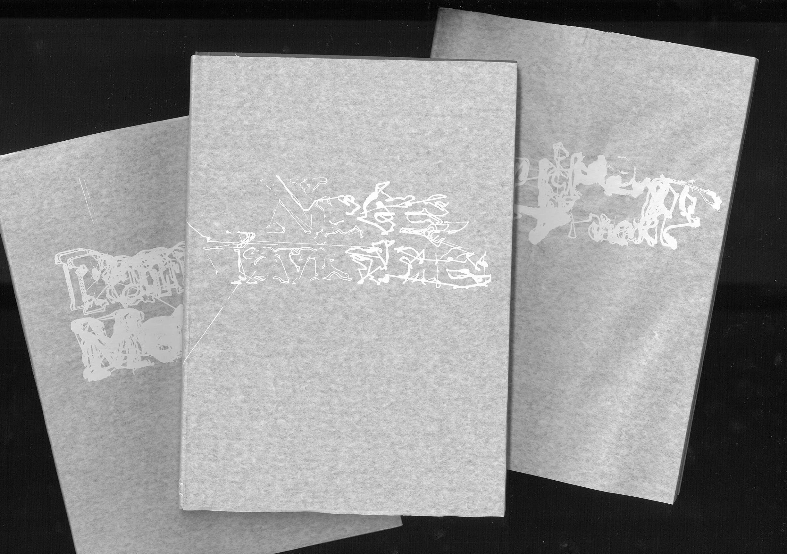
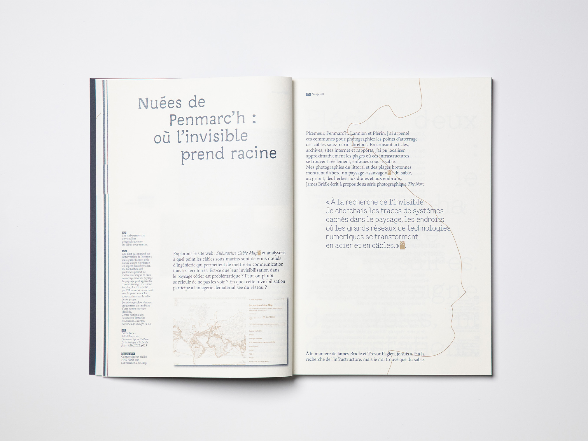
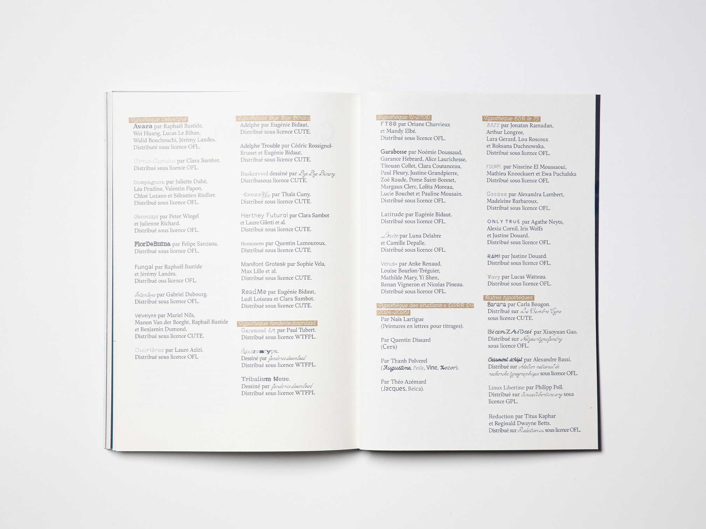
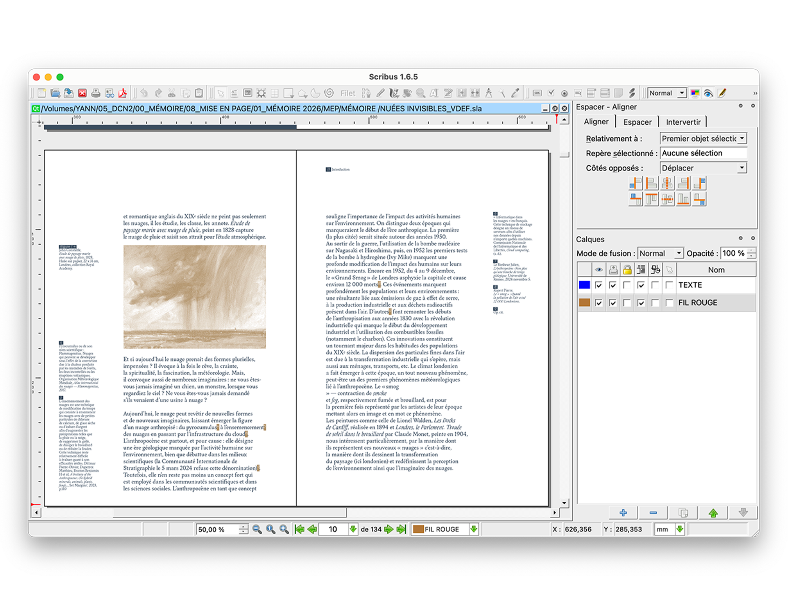

Des nuages poétiques à l'infrastructure numérique, ce mémoire explore les nuages en tant qu'objet polymorphe de l'anthropocène.
Nuées invisibles [Neb a heuilh ar glav, a gav HUGO], en breton : « Qui suit la pluie trouve HUGO. » Mais qui est HUGO ? High-capacity Undersea Guernsey Optical-fibre incarne ma quête des nuages invisibles. À travers l'art et le design, il met en lumière les réalités physiques : écologiques, économique, politiques et sociales, qui se cachent derrière une société contemporaine de plus en plus complexe.
Ce mémoire de recherche est l'occasion de naviguer entre les nuages, non plus comme des amas de vapeur d'eau, mais comme des objets qui évoquent nos sociétés.
La collection Pentalobe* intègre deux autres mémoires dont la conception éditoriale naît d'une envie de s'éloigner des logiciels de PAO propriétaires, en ce sens, nous avons conçu nos mémoires intégralement sur Scribus et quelques autres logiciels libres.




